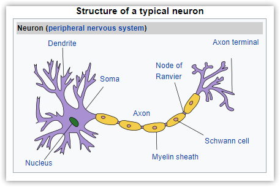
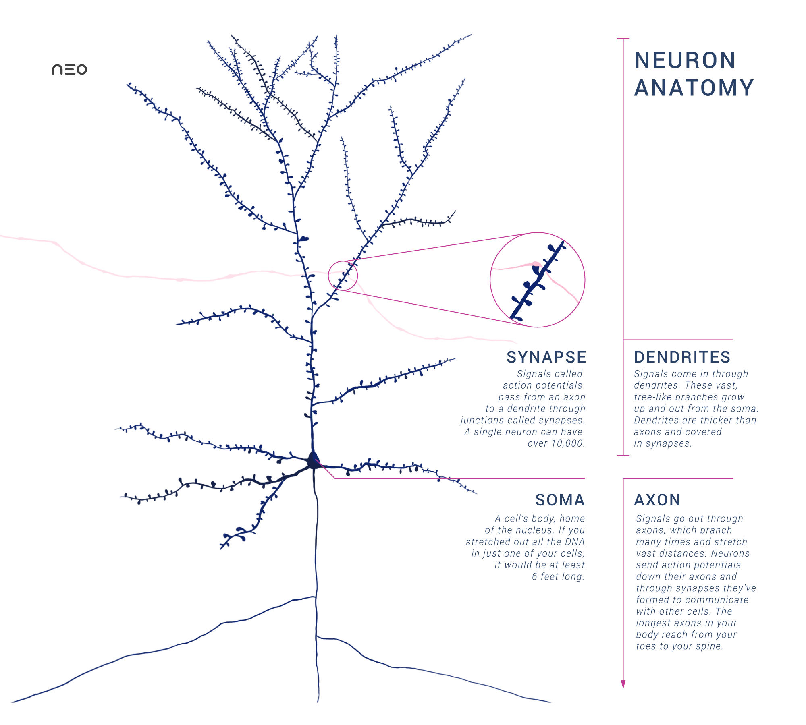

How to Practice
Charles L Flatt
2020-02-12
Contents
Introduction
This article isn't complete, but should still give you some good info to get started on practicing better!
Brain Science
Neurons are typically classified into three types based on their function. Sensory neurons respond to stimuli such as touch, sound, or light that affect the cells of the sensory organs, and they send signals to the spinal cord or brain. Motor neurons receive signals from the brain and spinal cord to control everything from muscle contractions to glandular output. Interneurons connect neurons to other neurons within the same region of the brain or spinal cord. A group of connected neurons is called a neural circuit. ... The signaling process is partly electrical and partly chemical. Neurons are electrically excitable, due to maintenance of voltage gradients across their membranes. If the voltage changes by a large enough amount over a short interval, the neuron generates an all-or-nothing electrochemical pulse called an action potential. This potential travels rapidly along the axon, and activates synaptic connections as it reaches them. Synaptic signals may be excitatory or inhibitory, increasing or reducing the net voltage that reaches the soma.1

Wikipedia
- Neuron
- Basic cellular building blocks of the brain. Made up of dendrites, cell body, and axon
- Dendrite
- Receives signals from other neurons.
- Soma
- The nuron cell body, which processes dendrite signals
- Axon
- "Cable" that connects to other dendrites. A neuron has a single axon. Travels as far as one meter. Ends in axon terminals.
- Synapse
- The point at the which a nervous impulse passes from one neuron to another. Where the axon terminal meets the next dendrite.
- Nucleus
- The nucleus is a membrane-bound organelle found in eukaryotic cells. The cell nucleus contains all of the cell's genome, except for a small fraction of mitochondrial DNA,...
- Myelin Sheath
- A lipid-rich (fatty) substance that surrounds nerve cell axons (the nervous system's wires) to insulate them and increase the rate at which information (encoded as electrical impulses) is passed along the axon. Each sheath looks like a bead, with a slight gap inbetween.

Wikipedia
The Role of Myelin
Myelin fills about 50% of our brain. Nerve impulses travel along a myelinated axon faster and stronger than non-melinated. The myelin allows the impulse to "jump" to the next open spot on the axon.
Kids are like myelin generating machines, soaking up information about the world and themselves. As we get older, we can continue to generate more myelin onto our axons, but it happens at a slower rate and requires more effort.2
Basically, the more repeat signals an axon receives, the more likely the brain will wrap the axon in myelin. Repeated practice will stimulate myeline formation.
We can tell for sure that [myelin] increases the speed and strength of the nerve impulse–which seems helpful for learning, but not conclusive.... There’s been a lot of research done on how musician brains differ from the brains of ordinary people. One specific study used a particular brain scan called Diffusion MRI, which gives us information about tissues and fibers inside the scan region in an non-invasive way.... Most significantly, there was a direct correlation between how many hours they practiced and how dense their white/myelin matter was.2
Whatever we repeat will become stronger. So, "perfect practice makes perfect."
Effective Practice
From Annie Bosler and Don Greene.3
Focus on the task at hand Minimize distraction
Start slowly or in slow motion Gradually increase the speed of quality (correct) repetitions
Frequent repetitions with allotted breaks Practice multiple times per day, limited duration
Practice mentally in vivid detail This is done after the correct physical motion has been established. The brain treats the imagined practice equally to the actual
However, I'm confident this won't increase muscle or stretching. Just coordination.
According to Dr K Anders Aricsson, deliberate practice has these characteristics4:
Well-defined, specific goals Improve specific skills during practice sessions.
Meaningful, problem-solving feedback Personal expert feedback saying 1) what you're doing right and wrong, 2) why it's right/wrong, 3) how to correct.
Comfort zones? Get outside them Don't "try harder," but do make it harder. Just hard enough to be challenging yet doable. “Generally, the solution is not ‘try harder’ but ‘try differently,’” Ericsson says.
Harness adaptability We're extremely adaptable in body and mind. The elite keep pushing boundaries.
Standards "Deliberate practice works best using expert practitioners with very specific goals who are dedicated to using the best teaching methods and providing the very best feedback."4
Mistakes Focus on the most difficulty and mistakes, and practice the hell out it.
Self-monitoring Learn how to identify and improve your own performance. But don't try this too soon.
Finally, don't stop practicing when you seem to "have it." Go a bit longer and "overlearn." "Decades of research have shown that superior performance requires practicing beyond the point of mastery."5
Memorization
The three stages of memory processing:6
- Encoding Conscious sensory perception of the information. If you attach meaning or factual knowledge to any of this sensory input, that's called semantic encoding.... research suggests we remember things better and retain them longer when we associate meaning to them using semantic encoding.
- Storage
- Short-Term (Working) Memory: Either dismissed or tranferred to long-term.
- Long-Term Memory: "Permanent," which isn't quite true.
- Recall More correctly, "reconstruction." The brain re-follows the memory's pathway, but fills in missing information and imposes current circumstances.
Memories are not frozen in time, and new information and suggestions may become incorporated into old memories over time. Thus, remembering can be thought of as an act of creative reimagination.7
Spaced Repetition
Don’t try to memorize the entire periodic table in one sitting. Instead, learn a few rows each day and review each lesson before starting anything new.8
Mnemonics
TBD
Loci (Memory Palace)
TBD
Sleep
Sleep resets the neurons, consolidating memories, so that new memories can be retained.9
- Get good nights' sleep. This is good for everything.
- Take a nap after learning something new.
- Study before going to sleep.
- DO NOT pull "all nighters."
- Researchers found that taking a nap of about 45-60 minutes immediately after learning something new could boost your memory 500%.10
Exercise
- Improves oxygen to the brain
- Aerobics triggers protein cathepsin B, which triggers neuron growth
- "Exercising about 4 hours after learning might be better for improving memory than exercising immediately after."
Myths
VARK Learning Styles
(The Atlantic 2018)
Another study published [2017] in the British Journal of Psychology found that students who preferred learning visually thought they would remember pictures better, and those who preferred learning verbally thought they’d remember words better. But those preferences had no correlation to which they actually remembered better later on—words or pictures. Essentially, all the “learning style” meant, in this case, was that the subjects liked words or pictures better, not that words or pictures worked better for their memories.
Note that Temple Grandin shows that people can have extremely different thinking styles, hers being highly visual. But this is shown in brain scans--the brains really are different.
We only use 10% of our brains
(Scientific American)
Though an alluring idea, the "10 percent myth" is so wrong it is almost laughable, says neurologist Barry Gordon at Johns Hopkins School of Medicine in Baltimore. Although there's no definitive culprit to pin the blame on for starting this legend, the notion has been linked to the American psychologist and author William James, who argued in The Energies of Men that "We are making use of only a small part of our possible mental and physical resources." ... "It turns out though, that we use virtually every part of the brain, and that [most of] the brain is active almost all the time," Gordon adds. "Let's put it this way: the brain represents three percent of the body's weight and uses 20 percent of the body's energy."
Left/Right Brain Thinking
(Psychology Today 2012)
There is more than a grain of truth to the left-brain right-brain myth. While they look alike, the two hemispheres of the brain do function differently. For example, it’s become almost common knowledge that in most people the left brain is dominant for language. The right hemisphere, on the other hand, is implicated more strongly in emotional processing and representing the mental states of others. However, the distinctions aren't as clear cut as the myth makes out—for instance, the right hemisphere is involved in processing some aspects of language, such as intonation and emphasis.
The 1960s investigations [into lef/right brain] were conducted on patients who’d had the thick bundle of fibers connecting their hemispheres cut as a last-resort treatment for epilepsy.
in most of what we do, the hemispheres have evolved to operate together, sharing information across this bridge.
Photographic Memory
(Scientific American 2007)
You might expect that an individual who claims to still see a picture after it has been removed would be able to have a perfect memory of the original picture. After all, a perfect memory is what is usually implied by the commonly used phrase "photographic memory." As it turns out, however, the accuracy of many eidetic images is far from perfect. In fact, besides often being sketchy on some details, it is not unusual for eidetikers to alter visual details and even to invent some that were never in the original. This suggests that eidetic images are certainly not photographic in nature but instead are reconstructed from memory and can be influenced like other memories (both visual and nonvisual) by cognitive biases and expectations.
The vast majority of the people who have been identified as possessing eidetic imagery are children. The prevalence estimates of the ability among preadolescents range from about 2 percent to 10 percent.... With a few notable exceptions, however, most research has shown that virtually no adults seem to possess the ability to form eidetic images.
Initially, it was found that these [chess grandmasters] could recall surprising amounts of information, far more than nonexperts, suggesting eidetic skills. However, when the experts were presented with arrangements of chess pieces that could never occur in a game, their recall was no better than the nonexperts, suggesting that they had developed an ability to organize certain types of information, rather than possessing innate eidetic ability.
-
The Science of Practice: What Happens When You Learn a New Skill↩↩
-
How to practice effectively...for just about anything - Annie Bosler and Don Greene - YouTube↩
-
Science of Learning 101: What Kind of Practice Makes Expert?↩↩
-
The Science of How To Practice a Skill Effectively | InformED↩
-
The Science of Memory: Top 10 Proven Techniques to Remember More and Learn Faster↩
-
Memory Recall/Retrieval | Types, Processes, Improvement & Problems↩
-
Test Study Tips: 21 Science-Based Ways to Improve Test Performance↩
-
Sleep 'resets' brain connections crucial for memory and learning, study reveals | Science | The Guardian↩
-
A short daytime nap could improve memory by fivefold, study finds↩
Comment for me? Send an email. I might even update the post!